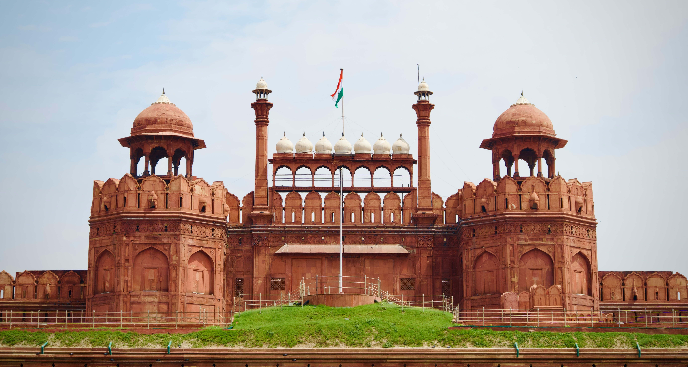
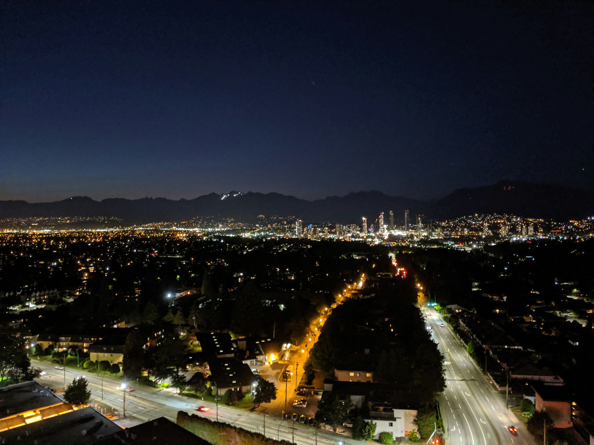
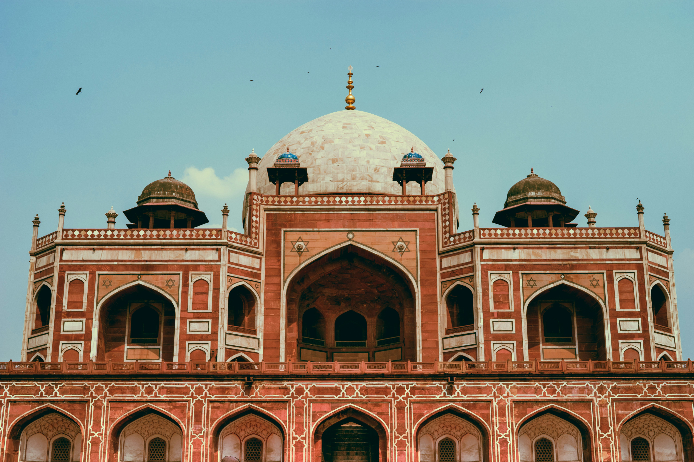
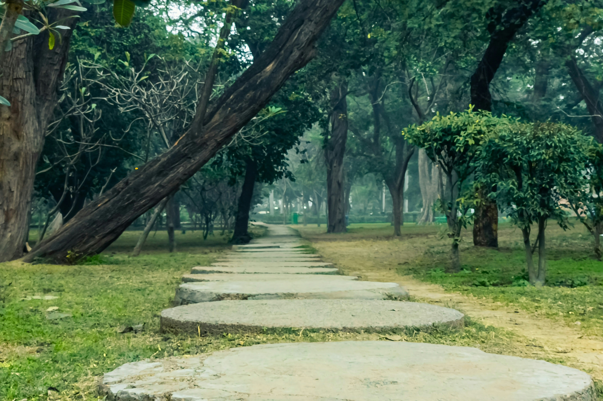
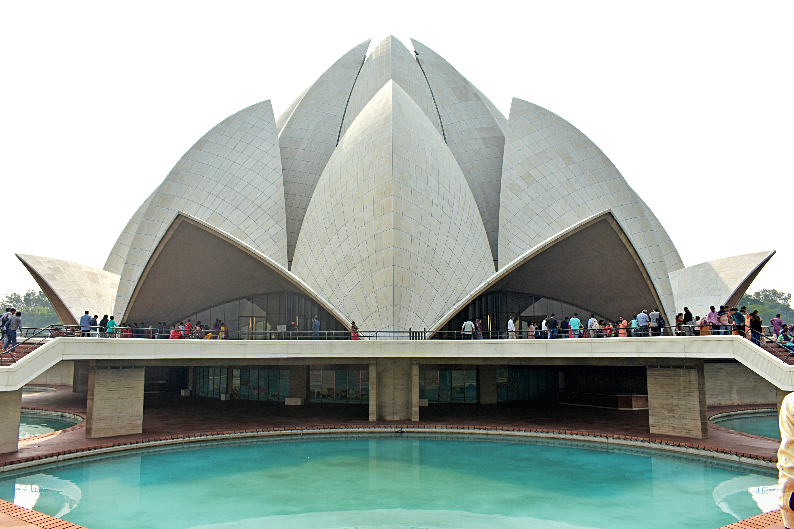
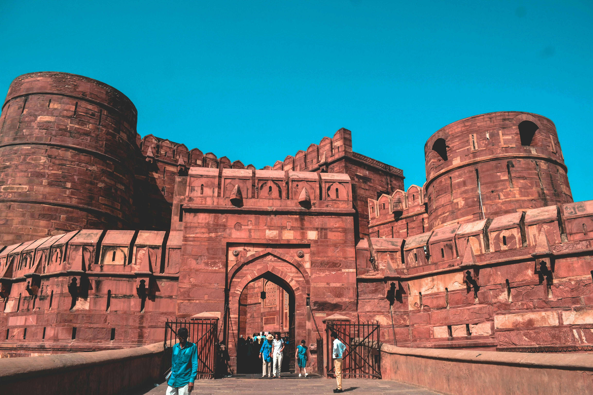

This is Delhi for you
India's capital is immense, bursting with energy and prosperity; it's a contrast between the very ancient and the thrillingly new, a place where the traditions of India are being reshaped and complemented by modernity as the nation rises and rises.
Home to 20 million people, New Delhi is an exciting place to be. You could spend a week soaking up the atmosphere of Old Delhi, or party in Rajouri Garden. Whatever you do, expect a warm welcome. New Delhi has its frantic moments, but it has its relaxing side too. In a city where the future and the past collide every day, there's something for everyone to enjoy.
Top 5 reasons to visit Delhi
-
Historical Attractions in One of the World's Oldest Cities
Delhi lays claim to being the oldest continually inhabited city in the world with more than 5,000 years of history. As you'd expect after so many centuries, there's no shortage of enthralling historical attractions. From the Red Fort built by Mughal emperor Shah Jahan to UNESCO-listed monuments like Humayun's Tomb and the soaring Qutub Minar, the past is everywhere.
-
Luxury Hotels, Superb Restaurants, and Exclusive Clubs
Modern Delhi offers quite an experience for affluent travelers. You can stay at the Imperial, where there's an on-site Chanel boutique, enjoy 24-hour butler service at the Oberoi, and rent private cars to whizz to nearby attractions like the Taj Mahal or Jaipur, before dining at fine eateries like Le Cirque at the Leela Palace Hotel.
-
Museums for Art Lovers, History Buffs, and Science Geeks
New Delhi has an incredible range of museums. Find out about Indian heroes like Mahatma Gandhi or Nehru at dedicated museums, get up to speed with contemporary Indian art at the Kiran Nadar Museum of Art, or learn about everything from interstellar physics to dinosaurs at the National Science Centre.
-
A Multicultural Mosaic of Faiths and Beautiful Religious Architecture
New Delhi is a meeting point of the world's great religions, and it has an extraordinary range of religious attractions. From the Baha'i Lotus Temple and the serene Gurdwara Sis Ganj Sahib to the majestic Jama Masjid Mosque and the Sacred Heart Cathedral, all faiths are represented in a city of hope and coexistence.
-
Delicious Local Cuisine
New Delhi is also one of India's great gastronomic destinations. In a country famous for its cuisine, that's really saying something. Don't miss delicacies like butter chicken, authentic paratha breads, meaty kebabs, and filling biryanis, but leave any worries about your waistline at the airport.
What to do in New Delhi
-
Red Fort: Politics and Royalty
This imperial palace was home to Mughal emperors for 200 years, and today visitors meet an imposing entrance as they march through the red fortified walls. But beyond the gates, luxurious architecture and design abound. Elegant inlaid flowers and carvings fill the site, while the detail and repetition of arches never get old. Jama Masjid next door is one of the country's largest mosques, and Chandni Chowk market is just outside too - filled with endless trinkets and necessities.
 -
Rajpath: Kingsway
During the colonization of India, this regal avenue was designed by the British to give a sweeping overview of the heart of the city. The India Gate stands assertively at one end, a memorial to the tens of thousands of Indian soldiers who perished fighting in World War One. The broad, tree-lined road stretches to Rashtrapati Bhavan, the Viceroy's Palace, which overlooks the scene. The National Museum is on the way too, a treasure trove of art and artifacts.
 -
Humayun's Tomb: Before the Taj Mahal
If you don't have time to visit Agra to see the world-famous Taj Mahal, a trip to Humayun's Tomb is undeniably the next best thing. Both examples of Mughal architecture are as stunning today as they've ever been, and the perfectly proportioned gardens in which they rest are indicative of the harmonious afterlife found in Islam culture. A pearly white dome rests atop this mausoleum, the interior covered in dazzling patterns high above the Emperor's grave. The whole thing is spectacular, especially as light fills the space.
 -
Lodhi Garden: East Meets West
As in many previously colonized cities, today's attractions in Delhi represent a conglomeration of cultures, and Lodhi Garden exposes the contrasts better than any other site in the city. The lush green space has been adapted by the British to combine traditional western landscaping with local leisure. Walkways lined with groomed trees, rose gardens, and more intermingle with distinctly native plants and age-old tombs. Locals and tourists alike enjoy exploring this vast park every day
 -
Lotus Temple: Modern Day Worship
One of the world's most iconic contemporary houses of Worship; the Lotus Temple is open to visitors of all beliefs and backgrounds. Awe-inspiring marble petals form the shape of an enormous flower, beneath which over 2000 people can come together. Natural light shines in from the outside, and every view is architecturally stunning - it is no wonder this is one of the most visited buildings in the world. Across the ponds and the surrounding park, the ISKCON Temple is another worthy sight.
 -
Taj Mahal: A Monument to Love
The last remnants of Mughal architecture are alive even today in the Taj Mahal. Every year, this UNESCO World Heritage site attracts anywhere from seven to eight million visitors. So majestic and imperial are her exteriors that no one would ever guess, at first glance, that the ivory-marble facade is actually a mausoleum. Resting on the banks of the Yamuna river, the palatial tomb, which Mughal emperor Shah Jahan built for his wife, Mumtaz Mahal, also houses a mosque and a guest house. The exteriors are flanked by lush gardens and pristine pathways.

-
Agra Fort: An Ancient Stronghold
With its 380,000 square feet and semi-circular design, not to mention the distinctive red 'terra' look of sandstone fortification, the Agra Fort is a piece of both Indian history and Indian architecture. It is rumoured that the great Mughal emperor Shah Jahan died in one of its towers (with a view of the Taj Mahal, of course). Besides its sprawling size, the Agra Fort features the majestic Delhi Gate, the Diwan-i-am and the gorgeous decorations on its exalted columns will mesmerize you for the day.

Where to Eat in New Delhi
Delhi is massive, so it's hard to pick a few exceptional eateries. Then again, there are some places that just can't be missed, like Cafe Lota near the Crafts Museum, with its bamboo screens and delicately spiced modern Indian cuisine. Bukhara in the Sheraton hotel often tops the list of "best Indian restaurants", while Sagar Ratna serves authentic southern Indian delicacies. Then there's the street food. Head to Connaught Place's Bengali Market for an astonishing array of tastes (and enticing aromas). In general, expect a high-end sit down meal to come to around ₹600 per head, but street food will be much less expensive.
When to visit New Delhi
New Delhi in July
₹8707
1 night at 3-star hotel
How to get to New Delhi
Plane
Indira Gandhi International Airport (DEL) is the main entry point for visitors from North America, and getting into town is fairly simple. The Airport Express Metro train from Terminal 3 is your best option, which takes 20 minutes and costs ₹60. Buses take almost an hour and cost ₹50, while taxis are faster (unless traffic intervenes) but will cost you around ₹400.
Train
Trains arrive in New Delhi from all over the Indian subcontinent, and if you are traveling around India, at least one rail journey is recommended. If you do catch the train to Delhi, try to alight at New Delhi station, not Delhi Junction or Hazrat Nizamuddin (though both are linked to New Delhi by the subway).
Car
Renting a car at the airport is an excellent idea, and you'll find companies like Avis and VIP Cars represented at the terminals. If you are driving into town, take Route 48 northbound and follow signs for the city center. Those coming from Agra need to take the Yamuna Expressway, which runs straight into Delhi.
Bus
India has a complex intercity bus network, with many state companies running services into different New Delhi bus stations. Buses from the south tend to get into Sarai Kale Khan bus station, which is right next to Hazrat Nizamuddin station. If you are coming from Kolkata or other eastern cities, you'll probably get off at Anand Vihar bus station, which has a subway stop as well, so getting to city center hotels shouldn't be hard.
Where to Stay in New Delhi
Connaught Place
often shortened to CP, Connaught Place is one of Delhi's financial, shopping, and nightlife hubs. The British built the area as a centerpiece for colonial Delhi, and nowadays it's still the center of the action. Its markets, shopping streets, and restaurants are where locals go to unwind.
Popular Neighborhoods in New Delhi
Gurgaon
actually located a short distance southwest of New Delhi, Gurgaon is its most modern suburb and the richest neighborhood in the whole of India. It's the kind of place where tourists brush shoulders with Bollywood stars, where the locals have a choice of waterparks for steamy summer afternoons, and new high rises appear every week.
Old Delhi
a far cry from the brash modernity of Gurgaon, Old Delhi has been there for millennia. This is where you'll find magical historical attractions like the Red Fort and the Jama Masjid Mosque, and it's where most visitors begin their tours of the city.
Most Booked Hotels in New Delhi
The Oberoi Gurgaon
Taj City Centre Gurugram
Taj Palace, New Delhi
The Leela Ambience Gurugram Hotel & Residences
Radisson Blu Plaza Delhi
ITC Maurya, a Luxury Collection Hotel, New Delhi
How To Get Around New Delhi
Public Transportation
Delhi's subway (Metro) is easily the best way to get around the inner part of the city, and its six lines provide excellent coverage that is improving all the time. Fares rise depending on how far you travel from a minimum of ₹8 and it's a good idea to purchase a rechargeable Smart Card during your stay. Day tickets for the whole network cost ₹100, so taking single journeys may work out as the cheapest option.
Taxi
Delhi's taxi scene has fully embraced smartphones, and alongside Uber you'll find Indian companies like Meru and Ola doing the same thing. This means that fares are fairly low. Even in standard green and yellow taxis, expect to pay ₹15 for the meter drop, then around ₹12 per mile. Air-conditioned taxis tend to be more expensive, but are almost always worth it.
Car
Although the inner city traffic in Delhi can be terrible, having your own car really makes sense if you plan to venture further afield or stay in Gurgaon. You can rent from companies like Avis, Carzonrent, and Zoomcar, and daily rates start at around ₹350.
The Cost of Living in New Delhi
Shopping Streets
Delhi is a shopper's paradise, whether you are into ultra-modern fashion boutiques or atmospheric bazaars. To start with, take a walk in the Old Delhi Bazaar, where its narrow lanes contain myriad clothes, spice and jewelry stalls (and smell delicious thanks to the street food vendors). Then head to DLF Emporio for a totally different experience. Here, luxury is everything, and brands like Paul Smith and Hugo Boss compete with Indian designers like Manish Arora. Connaught Place is another great shopping area - like a mixture of the two, with old-style stores and modern businesses alongside each other.
Groceries and Other
If you are self-catering or want to buy picnic ingredients during your stay, supermarkets like Big Bazaar and INA Market stock a range of western and Indian goods. Prices are very reasonable, at around ₹170 for a gallon of milk and ₹62 for 12 eggs.
Other popular cities Near Delhi
Gurgaon
Old Delhi
Agra